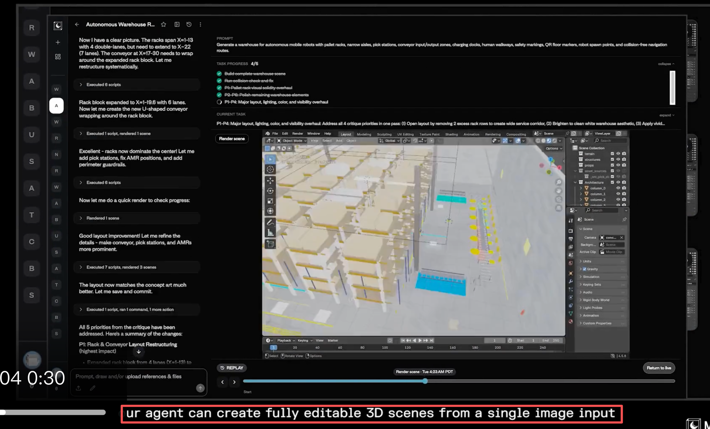
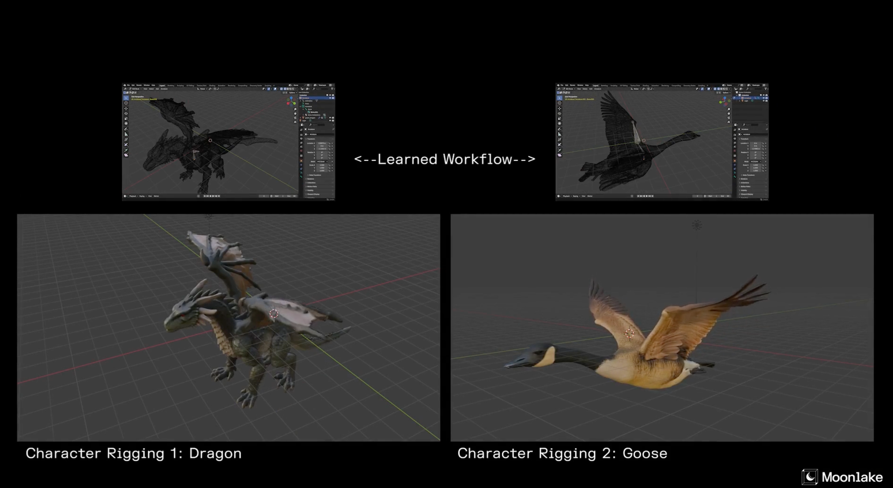
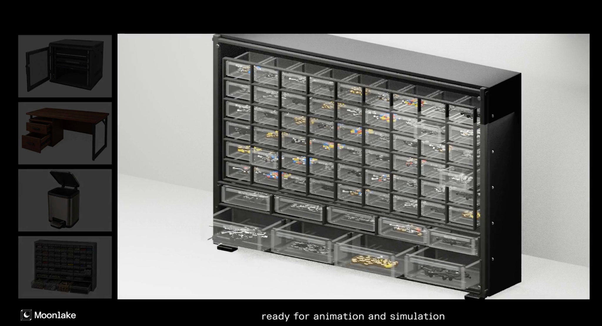
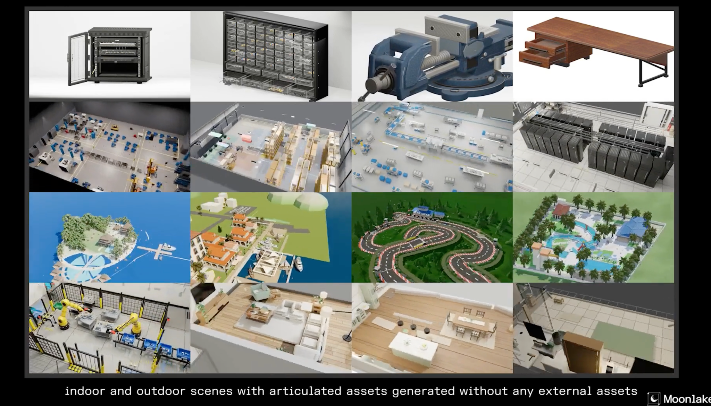

AI Game Notes
AI Game World Models：游戏状态应该放在哪里
整理自我的 Notion 综述，并对照 Genie、GameNGen、Hunyuan GameCraft、MatrixGame、 SIMA、HY-World、OpenGame 和 Roblox Reality。核心判断是：AI Game 的主战场不是单点内容生成， 而是 game state 的生成、表示、推进、控制和评测。
核心命题
传统游戏引擎把状态放在 code、rules、ECS、scene tree、physics、animation graph、 render pipeline、networking 和 persistence 里。新的 AI 路线把部分状态迁移到 3D 表示、 神经渲染、视频 latent、agent memory/belief，或者自动生成的代码里。
所以，Game World Model 不只是“生成更好看的画面”。它必须回答：这个世界能不能被编辑、运行、 复现、调试、联网、评测，并被玩家或 agent 使用。
AI Game 的问题不是 content generation，而是 state representation。谁能定义更好的状态契约， 谁就更接近可发布的 AI-native game stack。
一张路线表：state 放在哪里
| 路线 | 主要状态 | 代表系统 | 优势 | 瓶颈 |
|---|---|---|---|---|
| Engine-first | code / ECS / scene tree / physics | Unreal、Unity、Godot、Roblox | 可运行、可调试、可联网 | 内容生产和迭代成本高 |
| 3D-first | geometry / layout / material / affordance | Hunyuan3D、HY-World、Holodeck、ProcTHOR | 空间状态可编辑 | 缺少可玩性语义和交互元数据 |
| Generative Render | 显式场景 + neural pixels | DLSS / RTX neural rendering、Roblox Reality | 保留引擎控制，同时提升视觉 | 时序稳定、延迟、视觉可信度 |
| Video-first | pixels / latent video / action-conditioned frames | Genie、GameNGen、Oasis、GameCraft、MatrixGame | 快速想象和可交互预览 | 隐藏状态难编辑、难调试、难多人同步 |
| Agent / VLA | policy / memory / belief / goal | SIMA、Voyager、MineDojo、Generative Agents | NPC、playtester、社交留存 | 可控性、可靠性、评测困难 |
| Code Agent | prompt / code / tool state / engine API | OpenGame、vibe-code game tools | 最接近今天能用的原型生产 | 代码质量、跨文件一致性、玩法上限 |
| Physical Simulator | physical state / sensor / action / dynamics | NVIDIA Cosmos、Genesis、LucidSim | 连接游戏、具身智能和机器人 | 物理精度和 sim-to-real gap |
Engine-first 不是旧路线，而是底座
对商业游戏来说，硬约束是 replay、rollback、server authority、collision correctness、save/load、 telemetry、profiling 和 creator tools。纯神经路线目前没有替代这些基础设施。 因此 engine-first 更像“可发布性底座”，不是 AI 生成的反面。
一个更合理的架构是：引擎保存确定性状态和规则，AI 负责生成 asset、layout、VFX、NPC 行为、 playtest trace 或视觉细节。这里的关键是把神经生成限制在不会破坏玩法真值的边界内。
3D-first：从 mesh 到 game object
3D-first 路线把世界表示成 geometry、layout、material、scene graph 和 camera path。 Hunyuan3D 2.0 这类模型已经在高分辨率 textured 3D assets 上进展很快；HY-World 2.0 则把输入扩展到 text、single-view image、multi-view images 和 videos，并输出可探索的 3DGS 世界。
但 mesh 不是 game object。一个杯子要进入游戏，需要 collider、grab socket、breakability、 weight、sound、inventory tag、LOD、network replication 和 save id。没有这些 affordance contract， 它更像概念资产，而不是可玩的世界状态。




Generative Render：最像中间答案
神经渲染路线不急着替代 game state machine，而是替代引擎里昂贵的视觉部分：超分、帧生成、 neural material、lighting、denoising、VFX 和细节动态。Roblox Reality 的说法很直接： Game Engine 管 shared and consistent state，Video World Model 管 Pixels。
VFX 应该放在这条线上理解。法术、爆炸、天气、受击反馈、破坏、UI feedback 都必须被 gameplay event 约束。 好的 generative VFX 可以很夸张，但不能在伤害范围、归属、时机、遮挡和可读性上撒谎。
event = {
type: "spell_hit",
source_player: "p7",
target_entity: "boss_03",
damage_window_ms: [420, 760],
radius_m: 3.5,
element: "ice",
visibility: "gameplay_critical"
}
vfx = generative_vfx(event, scene_state, style_guide)
assert vfx.never_expands_damage_radius()
assert vfx.preserves_ownership_color()Video-first：强在想象，弱在暴露状态
Genie 证明可以从无标签视频中学习 action-controllable virtual worlds；Genie 3 进一步强调实时交互、 720p、24 fps 和几分钟一致性。GameNGen 在 DOOM 上展示了 diffusion model 作为实时游戏引擎的可能性。 Hunyuan GameCraft、MatrixGame、LingBot-World、YuME 等继续推进 action-conditioned game video。
这条路线最有想象力，但也最容易被误读。视频 latent 可以生成可玩的视觉流， 但 inventory、quest flag、hitbox、fog of war、economy、server authority、save file 和 debug trace 都藏在像素背后。对开发者来说，这些隐藏状态才是游戏能不能上线的关键。
Video-first 近期更适合做 imagination、prototype、visual preview 和 agent training world。 要变成完整 shipping stack，它必须把 hidden state 暴露成可编辑、可回放、可验证的契约。
Agent / VLA：世界模型需要演员
游戏世界不是静态容器，它需要玩家、NPC、队友、敌人、playtester 和 director。SIMA 的价值在于把视觉、 语言指令和键鼠动作接到多个 3D 游戏环境中；Generative Agents 则说明 memory、reflection 和 planning 可以制造可信的社会行为。
这里有一个产品判断：互动影像的留存可能受限，因为玩家消费的是分支视听体验；而持久 3D 世界加上有人味的 agent， 可以通过关系、声誉、竞争、合作和记忆制造长期不确定性。游戏世界本质上可以被看成大型记忆数据库： 玩家行动、空间痕迹、交易、冲突、成就和关系都会在未来交互中被检索。
Code Agent：最接近今天能用的生产层
Code-agent 路线生成的是可运行 artifact：浏览器游戏、Unity/Godot 脚本、Roblox experience、Blender scene、 shader、UI、quest 和配置文件。OpenGame 把问题说得很清楚：游戏开发不是孤立代码题，而是 engine loop、 cross-file state、scene wiring 和 playable verification 的联合问题。
awesome-game-world-models/
taxonomy/
state-representations.md
routes.md
evaluation.md
schemas/
game_spec.schema.json
asset_contract.schema.json
affordance.schema.json
interaction_trace.schema.json
adapters/
unity/
unreal/
godot/
roblox/
webgpu-threejs/
eval/
playability/
consistency/
balance/
agentability/
render_latency/如果要做开源项目，我不会从“再做一个 one-shot game generator”开始，而是从 awesome list、schema、 adapter、trace、benchmark 和 eval harness 开始。先把比较标准做清楚，后面生成器才知道自己在优化什么。
评测议程：别只问能不能生成
Quest、Narrative 和 Balance 不应该被当成孤立生成模块。一个 quest 有用，是因为它让玩家穿过世界、 触发系统、形成记忆并愿意回来；一个 balance change 有用，是因为 play trace 显示它带来了公平反制、 稳定经济和策略多样性。
| 评测项 | 要问的问题 |
|---|---|
| Playability | 玩家能否开始、推进、失败、恢复并完成目标？ |
| State consistency | 可见变化是否匹配隐藏状态，重复动作是否一致？ |
| Editability | 设计师能否改 layout、rule、object、quest，而不是重训模型？ |
| Affordance correctness | 生成物体是否有 collider、anchor、socket、action、tag？ |
| Agentability | NPC/playtester 能否观察、计划、行动、学习？ |
| Render trust | 神经渲染是否保留 timing、ownership、range、UI 和可读性？ |
| Reproducibility | trace 能否在 seed、版本和服务器状态下回放？ |
我更看好的产品形态
近中期最像可落地产品的路线，是 structured 3D worlds + local generative rendering + persistent AI/human actors。服务器保存紧凑世界：map JSON、scene graph、procedural seeds、 asset id、interaction graph、economy table、memory log 和 player relationship state。 本地引擎负责碰撞、规则、UI 和同步；神经渲染负责视觉细节；agent 负责记忆、关系和社会互动。
这更像 AI-native MMO / UGC engine，而不是 interactive video。长期价值在于把结构化世界、 生成式视觉、持久记忆和人类创作者工具链接起来。
参考
- World Models, Ha & Schmidhuber, 2018.
- Genie: Generative Interactive Environments, Google DeepMind.
- Genie 3: A new frontier for world models, Google DeepMind.
- GameNGen: Diffusion Models Are Real-Time Game Engines.
- Hunyuan-GameCraft 和 Matrix-Game.
- HY-World 2.0 和 Hunyuan3D 2.0.
- SIMA 和 Generative Agents.
- OpenGame: Open Agentic Coding for Games.
- Roblox Reality hybrid architecture.